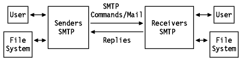
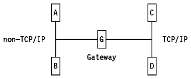

Table of Contents
Table of Contents  User
Applications
User
ApplicationsTable of Contents User
Applications
Electronic mail (E-mail) is probably the most widely used TCP/IP application. The basic Internet mail protocols provide mail (note) and message exchange between TCP/IP hosts; facilities have been added for the transmission of data which cannot be represented as 7-bit ASCII text.
There are three standard protocols which apply to mail of this kind. Each is recommended. The term SMTP is frequently used to refer to the combined set of protocols, since they are so closely inter-related, but strictly speaking SMTP is just one of the three. Normally, it is evident from the context which of the three protocols is being referred to. Whenever some doubt might exist, we shall refer to the STD or RFC numbers to avoid ambiguity. The three standards are:
The official protocol name for this standard is MAIL.
The STD 10/RFC 821 dictates that data sent via SMTP is 7-bit ASCII data, with the high-order bit cleared to zero. This is adequate in most instances for the transmission of English text messages, but is inadequate for non-English text or non-textual data. There are two approaches to overcoming these limitations:
RFC 1651 modifies RFC 821 to allow a client SMTP agent to request that the server respond with a list of the service extensions that it supports at the start of an SMTP session. If the server SMTP does not support RFC 1651 it will respond with an error and the client may either terminate the session or attempt to start a session according to the rules of RFC 821. If the server does support RFC 1651, it may also respond with a list of the service extensions that it supports. A registry of services is maintained by IANA: the initial list defined in RFC 1651 contains those commands listed in RFC 1123 - Requirements for Internet Hosts - Application and Support as optional for SMTP servers. Other service extensions are defined via RFCs in the usual manner. The next two RFCs define specific extensions:
The MIME and SMTP Service Extension approaches are complementary rather than competing standards. In particular, RFC 1652 is titled SMTP Service Extension for 8bit-MIMEtransport, since the MIME standard allows messages to be declared as consisting of 8-bit data rather than 7-bit data. Such messages cannot be transmitted by SMTP agents which strictly conform to RFC 821, but can be transmitted when both the client and the server conform to RFCs 1651 and 1652. Whenever a client SMTP attempts to send 8-bit data to a server which does not support this extension, the client SMTP must either encode the message contents into a 7-bit representation compliant with the MIME standard or return a permanent error to the user.
This service extension does not permit the sending of arbitrary binary data because RFC 821 defines the maximum length of a line which an SMTP server is required to accept as 1000 characters. Non-text data could easily have sequences of more than 1000 characters without a <CRLF> sequence.
Note: The service extension specifically limits the use of non-ASCII characters (those with values above decimal 127) to message bodies - they are not permitted in RFC 822 message headers.
SMTP (that is, STD 11/RFC 821) is based on end-to-end delivery; an SMTP client will contact the destination host's SMTP server directly to deliver the mail. It will keep the mail item being transmitted until it has been successfully copied to the recipient's SMTP. This is different from the store-and-forward principle that is common in many mailing systems, where the mail item may pass through a number of intermediate hosts in the same network on its way to the destination and where successful transmission from the sender only indicates that the mail item has reached the first intermediate hop.
In various implementations, there is a possibility to exchange mail between the TCP/IP SMTP mailing system and the locally used mailing systems. These applications are called mail gateways or mail bridges. Sending mail through a mail gateway may alter the end-to-end delivery specification, since SMTP will only guarantee delivery to the mail-gateway host, not to the real destination host, which is located beyond the TCP/IP network. When a mail gateway is used, the SMTP end-to-end transmission is host-to-gateway, gateway-to-host or gateway-to-gateway; the behavior beyond the gateway is not defined by SMTP. CSNET provides an interesting example of mail gateway service. Started as a low-cost facility to interconnect scientific and corporate research centers, CSNET operates a mail gateway service that allows subscribers to send and receive mail across the Internet using only a dial-up modem. The mail gateway polls the subscribers at regular times, delivers mail that was addressed to them and picks up the outgoing mail. Although this is not a direct end-to-end delivery, it has proven to be a very useful system.
Each message has:
Everything after the null (or blank) line is the message body which is a sequence of lines containing ASCII characters (that is, characters with a value less than 128 decimal).
RFC 821 defines a client/server protocol. As usual, the client SMTP is the one which initiates the session (that is, the sending SMTP) and the server is the one which responds (the receiving SMTP) to the session request. However, since the client SMTP frequently acts as a server for a user mailing program, it is often simpler to refer to the client as the sender-SMTP and to the server as the receiver-SMTP.
The user normally doesn't have to worry about the message header, since it is taken care of by SMTP itself. A short reference is included below for completeness.
RFC 822 contains a complete lexical analysis of the mail header. The syntax is written in a form known as the augmented Backus-Naur Form (BNF). RFC 822 contains a description of augmented BNF, and many RFCs which are related to RFC 822 use this format. RFC 822 describes how to parse a mail header to a canonical representation, unfolding continuation lines, deleting insignificant spaces, removing comments and so on. The syntax is powerful, but relatively difficult to parse. A basic description is given here, which should be adequate for the reader to interpret the meaning of simple mail headers that he or she encounters. However, this description is too great a simplification to understand the details workings of RFC 822 mailers; for a full description, refer to RFC 822.
Briefly, the header is a list of lines, of the form:
field-name: field-valueFields begin in column 1: lines beginning with white space characters (SPACE or TAB) are continuation lines which are unfolded to create a single line for each field in the canonical representation. Strings enclosed in ASCII quotation marks indicate single tokens within which special characters such as the colon are not significant. Many important field values (such as those for the ``To'' and ``From'' fields) are ``mailboxes''. The most common forms for these are: The string ``The Octopus'' is intended for human recipients and is the name of the mailbox owner. The string ``octopus@garden.under.the.sea'' is the machine-readable address of the mailbox (the angle brackets are used to delimit the address but are not part of it). One can see that this form of addressing is closely related to the Domain Name System concept. In fact, the client SMTP uses the Domain Name System to determine the IP address of the destination mailbox.
Some frequently used fields are:
The SMTP design is based on the model of communication shown in
Figure - Model for SMTP. As a result of
a user mail request, the sender-SMTP establishes a two-way connection with a
receiver-SMTP. The receiver-SMTP can be either the ultimate destination or an
intermediate (mail gateway). The sender-SMTP will generate commands which are
replied to by the receiver-SMTP.

Figure: Model for SMTP
If the sender-SMTP supports SMTP Service Extensions as defined in RFC 1651, it may substitute an EHLO command in place of the HELO command. A receiver-SMTP which does not support service extensions will respond with a 500 Syntax error, command unrecognized message. The sender-SMTP should then retry with HELO, or if it cannot transmit the message without one or more service extensions, it should send a QUIT message.
If a receiver-SMTP supports service extensions, it responds with a multi-line 250 OK message which includes a list of service extensions which it supports.
In the above description, only the most important commands were mentioned. All of them are commands that must be recognized in each SMTP implementation. Other commands exist, but most of those are only optional; that is, the RFC standard does not require them to be implemented everywhere. However, they implement very interesting functions such as relaying, forwarding, mailing lists, etc.
For a full list of command verbs, see the official RFC 821 - Simple Mail Transfer Protocol and RFC 1123 - Requirements for Internet Hosts - Application and Support. For details of SMTP service extensions, see RFC 1651 - SMTP Service Extensions, RFC 1652 - SMTP Service Extension for 8bit-MIMEtransport and RFC 1653 - SMTP Service Extension for Message Size Declaration.
R: 220 delta.aus.edu Simple Mail Transfer Service Ready S: HELO stockholm.ibm.com R: 250 delta.aus.edu S: MAIL FROM:<abc@stockholm.ibm.com> R: 250 OK S: RCPT TO:<xyz@delta.aus.edu> R: 250 OK S: RCPT TO:<opq@delta.aus.edu> R: 550 No such user here S: RCPT TO:<rst@delta.aus.edu> R: 250 OK S: DATA R: 354 Start mail input, end with <CRLF>.<CRLF> S: Date: 23 Jan 89 18:05:23 S: From: Alex B. Carver <abc@stockholm.ibm.com> S: Subject: Important meeting S: To: <xyz@delta.aus.edu> S: To: <opq@delta.aus.edu> S: cc: <rst@delta.aus.edu> S: S: Blah blah blah S: etc..... S: . R: 250 OK S: QUIT R: 221 delta.aus.edu Service closing transmission channel Note that the message header is part of the data being transmitted.
If the network is using the domain concept, an SMTP cannot simply deliver mail sent to TEST.IBM.COM by opening a TCP connection to TEST.IBM.COM. It must first query the name server to find out to which host (again a domain name) it should deliver the message.
For message delivery, the name server stores resource records (RRs) known as MX RRs. They map a domain name to two values:
It is also possible that the name server responds with an empty list of MX RRs. This means that the domain name is in the name server's authority, but has no MX assigned to it. In this case, the sending SMTP may try to establish the connection with the host name itself.
An important recommendation is given in RFC 974. It recommends that after obtaining the MX records, the sending SMTP should query for WKS (Well-Known Services) records for this host, and should check that the referenced host has SMTP as a WKS-entry.
Note: This is only an option of the protocol but is already widely implemented.
Here is an example of MX Resource Records:
fsc5.stn.mlv.fr. IN MX 0 fsc5.stn.mlv.fr. IN MX 2 psfred.stn.mlv.fr. IN MX 4 mvs.stn.mlv.fr. IN WKS 152.9.250.150 TCP (SMTP)
In the above example, mail for fsc5.stn.mlv.fr should by preference, be delivered to the host itself, but in case the host is unreachable, the mail might also be delivered to psfred.stn.mlv.fr or to mvs.stn.mlv.fr (if psfred.stn.mlv.fr is unreachable, too).
Since an SMTP mail receiver is a server program, and SMTP is an end-to-end application rather than a store-and-forward one, it is necessary for the server to be available when a client (sender) wishes to transmit mail. If the SMTP server resides on an end-user workstation or PC, that workstation must be running the server when the client wishes to send. Some clients, such as the SMTP service virtual machine on VM (which are themselves servers for a user mail program) can periodically retry the server for a finite period of time, others such as the MAIL program on DOS cannot. In either case, if the server is unavailable it will sooner or later be regarded as unreachable by the SMTP client and the sending process will fail. This is not generally a problem for multi-user systems because the systems are normally unavailable only for relatively short periods of time. For single-user systems, however, this is not the case, and a method for ensuring that the user has an accessible mailbox on a different server is required. There are a number of other reasons why it may be desirable to off-load mail server functions from a user workstation, including a lack of resources on small workstations, the lack of, or expense of, continuous TCP/IP connectivity and so on.
The simplest approach, of course, is for the user to use a multi-user host system for mail functions, but this is frequently not desirable -- perhaps the user does not use a host system for any other purpose, or the user wants access to workstation files when composing mail messages without uploading them. Alternatively, the end-user may run a client program which communicates with a server program on a host. This server program acts as both a sender and a receiver SMTP. An example of this is Ultimedia Mail/2: an OS/2 Presentation Manager client/server multimedia capable mail program which is described in more detail in Implementations. In either of these cases, the end users mailbox resides on the server, and mail to other users is sent by the server system.
An intermediate approach is to off-load the SMTP server function from the end-user workstation, but not the SMTP client function. That is, the user sends mail directly from the workstation, but has a mailbox which resides on a server system. The user must then connect to the mail server system to collect mail from the mailbox.
The Post Office Protocol (POP) describes how a program running on an end-user workstation may receive mail stored on a mail server system. POP uses the term ``maildrop'' to refer to a mailbox managed by a POP server. Post Office Protocol Version 3 is a draft standard protocol and its status is elective. The older Post Office Protocol Version 2 is an historic protocol with a status of not recommended.
When a user employs a server system for all mail functions, the mailbox address seen by other SMTP users refers exclusively to the mail server system. For example if two OS/2 systems are named:
with the first one being used as an UltiMail client and the second as an UltiMail server, the mailbox address might be: This mailbox address would appear in the ``From:'' header field of all outgoing mail and in the SMTP commands to remote servers issued by the UltiMail server system.When the user uses a POP server, however, the mailbox address on outbound mail items contains the workstation's hostname (for example steve@hayes.itso.ral.ibm.com). In this case, the sender should include a ``Reply-To:'' field in the mail header to indicate that replies should not be sent to the originating mailbox. For example, the mail header might look like this:
Date: Fri, 10 Feb 95 15:38:23 From: steve@hayes.itso.ral.ibm.com To: "Steve Hayes" <tsgsh@gford1.warwick.uk.ibm.com> Reply-To: hayes@itso180.itso.ral.ibm.com Subject: Test Reply-To: header fieldThe receiving mail agent is expected to send replies to the ``Reply-To:'' address and not the ``From:'' address.
An alternative approach to using the ``Reply-To:'' header field is to use the Domain Name System to direct mail to the correct mailbox. The administrator for the Domain Name Server with authority for the domain containing the user's workstation and the name server can add MX resource records to the Domain Name System to direct mail appropriately, as described in SMTP and the Domain Name System. For example, the following MX records indicate to client SMTPs that, if the SMTP server on hayes.itso.ral.ibm.com is not available, there is a mail server on itso.180.ral.ibm.com (9.24.104.180) which should be used instead.
itso180.itso.ral.ibm.com. IN WKS 9.24.104.180 TCP (SMTP)
hayes.itso.ral.ibm.com. IN MX 0 hayes.itso.ral.ibm.com.
IN MX 1 itso180.itso.ral.ibm.com.
A detailed description of the SMTP, MAIL and DNS-MX standards can be found in the following RFCs:
This section discusses the various SMTP implementations on different systems, with particular emphasis on how SMTP is integrated with the system's native mail facilities.
There are two possible approaches to using SMTP on VM: the use may send mail directly via the SMTP server, or via the RSCS Data Interchange Manager.
The SMTP mailing capabilities are directly accessible from the normal mailing functions.
When sending files via SMTP, SENDFILE EXEC adds a minimum set of RFC 822 header records to the file, wraps the note in an RFC 821 format ``Batch SMTP'' envelope then sends it to SMTP for transmission. Files to non SMTP-users are sent exactly as with the supplied CMS SENDFILE EXEC.
When sending notes via SMTP, SENDFILE EXEC converts the CMS format note header records to the equivalent RFC 822 header records, wraps the note in an RFC 821 format ``Batch SMTP'' envelope then sends it to SMTP for transmission. For example, a CMS NOTE header of the form:
Date: 8 February 1995, 15:49:33 EST From: Steve Hayes HAYES at WTSCPOK To: TSGSH at gford1.warwick.uk.ibm.com Subject: Testing TCP/IP NOTE EXECis converted to the following for SMTP recipients:
Date: Wed, 8 Feb 95 15:50:28 EST From: "Steve Hayes" <HAYES@WTSCPOK.ITSC.POK.IBM.COM> To: TSGSH@gford1.warwick.uk.ibm.com Subject: Testing TCP/IP NOTE EXECNotes to non SMTP-users are sent exactly as with the supplied CMS SENDFILE EXEC.
Send To : SMTP ... .ddn vm90(peter) paris2(gerard).Incoming mail from a TCP/IP sender will arrive from the SMTP user ID, so the REPLY function cannot be used since this would send the reply to SMTP itself. A new note must be used instead.
For notes and files sent from CMS or from OV/VM, there is an SMSG interface. The user sends an SMSG to the SMTP service machine with a single word command. The commands supported are:
The RSCS Data Interchange Manager (DIM) allows CMS users and OfficeVision/VM (PROFS) users to send mail via SMTP using standard CMS or OV/VM facilities without the need to specify mailbox addresses in the SMTP user@host.domain format. RSCS DIM maintains a nickname table which maps 1 to 8-character nicknames to SMTP mailbox addresses, and manages a dummy RSCS link which provides the access to and from SMTP via the RSCS DIM service virtual machine. Users send mail to an SMTP network using CMS or OfficeVision (PROFS) notes, giving the nickname for the SMTP mailbox and the RSCS node associated with RSCS DIM. The RSCS service machine re-directs the note to the RSCS DIM service machine which changes the RSCS user IDs and nodenames in the header to SMTP mailbox addresses and then packages the resulting RFC 822-compliant note to SMTP. For example, if the following entry appears in the RSCS DIM nickname table:
steve tsgsh@itso180.itso.ral.ibm.comand the RSCS node associated with RSCS DIM is SMTPGATE, then a CMS user would send notes to STEVE at SMTPGATE. RSCS DIM would convert the CMS note header of the form:
Date: 8 February 1995, 15:15:46 EST From: ENDERS at WTSCPOK To: STEVE at SMTPGATE Subject: A test of RSCS Interchangeto one like this:
Date: Wed, 8 Feb 95 15:15:46 -0500 From: <enders@wtscpok.itsc.pok.ibm.com> To: <tsgsh@itso180.itso.ral.ibm.com> Subject: A test of RSCS Interchangebefore forwarding it via SMTP. In the reverse direction, RSCS DIM applies the opposite changes, and also adds a ``Return-Path:'' record. An RFC 822 header of the form:
Date: Wed, 8 Feb 95 15:20:34 -0500 From: Steve Hayes <tsgsh@itso180.itso.ral.ibm.com> To: Matthias Enders <enders@wtscpok.itsc.pok.ibm.com> Subject: A test of RSCS Interchangeis converted to one like this:
Date: 8 February 95, 15:20:34 EST From: Steve Hayes STEVE at SMTPGATE To: Matthias Enders ENDERS at WTSCPOK Subject: A test of RSCS Interchange Return-Path: <tsgsh@itso180.itso.ral.ibm.com>
RSCS DIM privileged user may add, change and delete nicknames and restrict access to the RSCS DIM by user ID. By default, general users may also add nicknames (which are publicly visible) and change or delete nicknames which they added. Users may also create temporary nicknames by embedding lines of the form:
<nickname>:user@host.domainimmediately after the note header.
Note: RSCS DIM nicknames are independent of end-user nicknames. A user may refer to an RSCS DIM nickname via a CMS or PROFS nickname file exactly as though it were a conventional user ID at a remote node.
The SMTP server is implemented as a disconnected VM service machine. Outgoing mail is sent to the SMTP service as a NETDATA format note or punch file via the SPOOL. The note contains the mail item surrounded by an ``Batch SMTP'' envelope. This envelope contains the SMTP commands that the SMTP virtual machine (the SMTP client) is to issue to the remote SMTP server. The SMTP virtual machine receives the spool file, validates the SMTP commands in the envelope then begins an SMTP session with the server, executing the commands given in the envelope. It is possible to send multiple mail items in a single Batch SMTP file, but the SENDFILE and NOTE EXECs supplied with TCP/IP do not do this. A VM host with TCP/IP and SMTP running can act as a gateway between a TCP/IP network and an RSCS network. See SMTP Gateways for more details.
A local site is allowed to customize the SMTP mail headers with the REWRITE822HEADER statement. This is implemented in conformance with the guidelines set forth by RFC 822.
Mail Exchange (MX) records defined in RFC 974 are also supported when SMTP is used in conjunction with a name server. This allows the mail server to deliver mail to alternate hosts or hold for future delivery if the primary destination is not available.
The MVS TCP/IP SMTP functions are very similar to the VM TCP/IP ones.
This is provided through a TSO/E interface.
The SMTP server on MVS is closely analogous to that on VM. It resides in a separate started task and receives outgoing mail in NETDATA format via JES. The mail has the true mail item surrounded by a Batch SMTP envelope containing the commands that the SMTP server issues to send the mail to the remote user. When a name server is being used, SMTP supports Mail Exchange records. The REWRITE822HEADER configuration statement is also available.
SMTP can also be configured to act as a TCP-to-NJE Mail Gateway. See SMTP Gateways for more details.
For consistency with other OS/400 mail functions, SMTP is coupled to the OS/400 delivery services (SNADS). SNADS is part of the OS/400 operating system and it contains extensions to support SMTP. This allows you to send mail to various types of users (not just SMTP users) but with one consistent user interface.
Configuring an OS/400 system to use SMTP can be an extensive process. The benefits of this extensive configuration are in the usability of the product: after configuration, the use of SMTP is not different from any of the OS/400 mail protocols. The user does not need to know whether the mail is being delivered by SNADS to another SNADS system, or via SMTP. SMTP may be configured to operate as an SMTP/SNADS Gateway. See SMTP Gateways for more details.
Because SNADS interfaces with SMTP, much of the configuration process is SNADS configuration. The steps to perform are the following:
SMTP can be configured so that incoming mail from remote SMTP users causes SMTP to automatically generate SNADS directory entries and SMTP alias table entries for the sending user so that the local user can reply to the mail without having to manually register the SMTP user. The directory user IDs added are of the form QSMnnnnn (nnnnn is a numeric string in the range 01 to 99999) with a SNADS address of QSMRMTAD and system name TCPIP. An entry is added to the system alias table to associate this SNADS entry with the real SMTP mailbox address.
OfficeVision/400 provides the user interface to SMTP. Additionally, mail can also be sent and received using CL commands.
The AS/400 user sees incoming mail as though it came from SNADS. If automatic registration of incoming users is enabled or if the sender has been previously registered, then the SNADS user ID and address will be valid and can be used for replying to the mail. If neither of these is true, the sender will be invalid and the user will have to add an entry to the alias table in order to reply to the mail. The registration must be explicit; SMTP looks for exact matches with the user ID and address in the alias tables, ignoring *ANY group entries when dealing with incoming mail.
The AS/400 can send mail to a user in the SMTP network by specifying the SNADS user ID and address, provided that a system directory entry for the SMTP exists. This may be an individual entry for the user ID and host (either manually or automatically registered), a group reference to the host (that is one with *ANY as the user ID) or even the ``*ANY *ANY'' entry. (14)If no entry is found an error is returned to the user. SMTP then searches the alias tables for the SNADS user ID and address or the SNADS address alone; if an entry is found it is used as the SMTP mailbox address of the recipient.
A SNADS user is identified by a user ID, address and system name while an SMTP mailbox address has a user ID and a host name. The SMTP user ID of a SNADS user is created by concatenating the SNADS user ID and address, separated by a delimiter character (the default delimiter is ``?''). The SMTP host name is the local AS/400 system name concatenated with the local domain name, separated by a period. Thus, the address looks like this:
userid?address@systemid.domain1.domain2.domain3Local user IDs may also have an entry in the system alias table. If there is a match for the SNADS user ID and address in the table, the alias is used as the SMTP user ID and the address looks like this:
alias@systemid.domain1.domain2.domain3When SMTP sends outbound mail, it uses the alias form if one exists or the userid?address form if not.
When SMTP receives incoming mail, it attempts to interpret the To: mailbox address as a SNADS address. The first token after the ``@'' and before the next period is the SMTP host name. This is verified against the local host table and if it is not found, the mail is rejected. If it is found, the mailbox address is interpreted like this:
All AIX implementations of SMTP provide a similar user interface through:
Also the Basic Network Utilities (uucp) can use the TCP/IP interface program for sending and receiving files and commands between systems. The uucpd daemon shipped with BNU provides BNU facilities over an internet.
The Post Office Protocol (POP) Versions 2 and 3 are also supported by AIX.
Both the SMTP client and server functions are implemented in TCP/IP for OS/2 by the SENDMAIL program. Incoming mail is stored by the SENDMAIL program in the subdirectory ETC\MAIL. Outgoing mail and temporary files are stored in the subdirectory ETC\MQUEUE. The user may send a file to a remote mail destination by executing the SENDMAIL program from an OS/2 command session. To receive mail, the SENDMAIL program must be running in the background as a server.
SENDMAIL also supports the MX records (See SMTP and the Domain Name System).
Mail can be sent with a TYPE command, or with the SENDMAIL command itself, but the main mail administrator is the LaMail program. LaMail is an OS/2 application that provides a LAN-attached user with a Presentation Manager interface to SENDMAIL. It includes file editing, spell checking, synonym and user environment configuration functions. It displays mail delivered by SENDMAIL in an In-basket object, and allows the user to configure additional folders for storing sent and received mail items. All of these objects are displayed within the main LaMail window and are opened by double-clicking with the mouse as usual for Presentation Manager applications. LaMail allows the user to create ``nicknames'' for frequently used correspondents via a pull-down menu (the nicknames are stored in the \TCPIP\LaMail/nickname.nam file in a format which matches that of a VM NAMES file).
OS/2 users may also use UltiMedia Mail/2 (UltiMail) which is a MIME-compliant OS/2 Presentation Manager client/server multimedia mail program. See Multipurpose Internet Mail Extensions (MIME) for more information on MIME and UltiMail.
The OS/2 Warp Internet Connection provides a SENDMAIL program but, instead of LaMail, it contains UltiMail Lite which is MIME-compliant and contains a POP3 client. Because the Internet Connection is intended for SLIP modem connections, a POP client is essential in order for most home and small office users to receive mail without being permanently connected to the Internet. UltiMail Lite is also provided as part of TCP/IP for OS/2 Version 3.0 which is supplied with OS/2 Warp Connection. Since this version of Warp is intended for use with permanent TCP/IP connections, mail may be sent directly to the OS/2 system, with SENDMAIL providing the SMTP server, or it may be sent to a POP3 server, and the POP3 client used to collect mail. See Multipurpose Internet Mail Extensions (MIME) for more information on MIME and UltiMail.
Mail support is provided through SMTP and Post Office Protocol (POP) functions.
The IBM TCP/IP MAIL program (WMAIL) is a Windows program that provides a common interface to all of the mailing functions. Users can perform mail tasks such as send and receive mail, display, reply to and delete incoming mail, and create mail items with the user's preferred editor and other utility functions such as printing and nickname management. Files may be attached to mail items by selecting the Attach File from the File pull-down menu. This uses the UUENCODE utility supplied with TCP/IP for DOS.(15) Mail may be received with WMAIL using either SMTP or POP or both. The WMAIL program must be active for remote users to send mail directly to the DOS system, since the SMTP server is part of WMAIL. POP allows mail to be sent to a mailbox on a remote mail server when WMAIL is not running; the user receives mail by selecting the Retrieve Mail item from the Mail pull-down menu. When receiving mail, there is an Unattach File option on the File pull-down menu. This uses the UUDECODE utility (also supplied with TCP/IP for DOS).(15)
The MAIL program is a DOS-based SMTP client which will send a file from disk to an SMTP destination. The MAIL program prefixes the file with a set of RFC 822 headers, for example, the command:
mail tsgsh@gford1.warwick.uk.ibm.com c:\mail.datwhere the c:\mail.dat file contains:
Reply-To: hayes@rs60007.itso.ral.ibm.com Subject: test dos mail function testing, testing 1, 2, 3.results in the following mail item being sent:
Date: 2/10/1995 From: pcuser@dos2.itso.ral.ibm.com Subject: This mail comes from a PC Station. To: tsgsh@gford1.warwick.uk.ibm.com Reply-To: hayes@rs60007.itso.ral.ibm.com Subject: test dos mail function testing, testing 1, 2, 3.Note that MAIL does not interpret the contents of the MAIL.DAT file as containing RFC 822 header records, so the Reply-To: line in the mail item is in the body of the mail (because it is after the <CRLF><CRLF> sequence and so will be ignored by RFC 822-compliant mail readers).
MAIL supports a ``-u'' option to ``UUencode'' files with binary data.
The POPGET program is a DOS-based POP client which will download files from the mail server to a mail directory specified in the \TCPIP\ETC\TCPDOS.INI file. Normally, this is the \TCPIP\ETC\MAIL directory. For example, if the user ID HAYES is registered with password STEVE at a POP server running on the AIX system rs60007.itso.ral.ibm.com, then the command:
popget steve -s rs60007.itso.ral.ibm.com -u hayeswill download each of the items in the mailbox to a file in the mail directory, where they can be viewed with an ASCII editor. If a mail item contains a ``UUencoded'' file, the UUDECODE program must be used to extract the original file from the file downloaded to the mail directory.
A complete description of the configuration and all the mail programs can be found in IBM TCP/IP Version 2.1.1 for DOS: User's Guide.
An SMTP gateway is a host that has two links
connected to different networks. SMTP gateways may be implemented to connect
many different kinds of networks.

Figure: SMTP-RSCS/NJE Mail Gateway
VM and MVS are both secure gateway capable.
An SMTP-RSCS/NJE gateway is configured using the SMTP configuration file as shown below. To configure a host which is not to act as a gateway, the GATEWAY statement should not be specified.
.........
;
GATEWAY ; accept mail from and deliver mail to RSCS host
RSCSDOMAIN RSCSNET ; pseudo domain name of associated RSCS network
LOCALFORMAT NETDATA ; local recipients receive mail in Netdata format
RSCSFORMAT NETDATA ; RSCS recipients receive mail in Netdata format
REWRITE822HEADER NO ; Only set to no if you do not want SMTP to
; rewrite the 822 headers on all mail passing
; from RSCS to TCP through gateway.
..........
A user on a host on the TCP/IP network will have to write the destination in
the following way to send it to a VM or MVS host located on the RSCS/NJE
network:
user%nodeid@gatewayThe mail gateway needs to have some information in order to identify the nodes in the RSCS/NJE network.
On VM systems in the RSCS/NJE network, in order to use the mail gateway, the TCP/IP NOTE and SENDFILE EXECs must be available together with a TCPIP DATA file specifying the local host name and domain name (see IBM TCP/IP Version 2 Release 3 for VM: Planning and Customization for more details). On MVS systems, a properly configured SMTPNOTE CLIST is needed (see IBM TCP/IP Version 3 Release 1 for MVS: Customization and Administration Guide for more details).
Specific users and/or nodes in the RSCS/NJE network may be prevented from using the gateway by coding a RESTRICT statement in the SMTP configuration. Alternatively, the gateway may be made a secure gateway where only explicitly authorized users in the RSCS/NJE network can use it by adding a SECURE statement to the SMTP configuration file. When operating in secure gateway mode, only those RSCS or NJE addresses in an SMTP security table are authorized to send and receive mail. In addition, SMTP source routing is disabled to prevent the gateway from relaying mail to unauthorized users. SMTP rejects mail from or to unauthorized RSCS or NJE users.
Here is an example of an SMTP security table:
* * <userid> <nodeid> <nickname> <primary_nick?> <primary_mbox?> * DEBULOI MLVFSC0 DEBULOIS MLVFSC1 FRED0 Y N DEBULOIS MLVFSC5 FRED1 N Y TCPMAINT MLVFSC5 TCP0 N N DEBULOIS MLVFSC1 TCP1 Y Y
According to the previous table (assuming that the host name of the gateway is SMTP-GW.IBM.COM), mail sent from the following RSCS/NJE addresses is rewritten to the following TCP network addresses:
DEBULOI at MLVFSC0 >>>>>> DEBULOI%MLVFSC0@SMTP-GW.IBM.COM DEBULOIS at MLVFSC1 >>>>>> TCP1@SMTP-GW.IBM.COM DEBULOIS at MLVFSC5 >>>>>> FRED1@SMTP-GW.IBM.COM TCPMAINT at MLVFSC5 >>>>>> TCP0%MLVFSC5@SMTP-GW.IBM.COM
Mail sent from the following TCP addresses is forwarded to the following RSCS/NJE network addresses:
DEBULOI%MLVFSC0@SMTP-GW.IBM.COM >>>>>>> DEBULOI at MLVFSC0 FRED1@SMTP-GW.IBM.COM >>>>>>> DEBULOIS at MLVFSC5 TCP1@SMTP-GW.IBM.COM >>>>>>> DEBULOIS at MLVFSC1 TCP0%MLVFSC5@SMTP-GW.IBM.COM >>>>>>> TCPMAINT at MLVFSC5
Please refer to IBM TCP/IP Version 2 Release 3 for VM: Planning and Customization and IBM TCP/IP Version 3 Release 1 for MVS: Customization and Administration Guide for more details.
An OS/400 TCP/IP system may be configured to act as a gateway. OS/400 users on remote AS/400s refer to SMTP users in the TCP/IP network by SNADS addresses. As before, the OS/400 gateway provides SMTP access to remote users in a form that is very well integrated with AS/400 Office mail, but requires configuration work to enable this seamless integration. Automatic registration of users sending mail via SMTP may be employed to reduce the administrative overhead of updating aliases. Each AS/400 system using the gateway needs an entry in its system directory for each host in the SMTP network. SMTP hosts have a matching SNADS address in the gateway's system directory in which case the sending system requires an entry in its directory to route mail for that SMTP host. Individual SMTP users may also have entries manually created at the gateway, which also need matching entries at the systems using the gateway. Finally, if automatic registration is being employed, there will be SMTP users with a SNADS address of QSMRMTAD. The systems using the gateway should route mail for *ANY QSMMRTAD to the gateway.
Note: Because remote SNADS users do not have access to the alias tables used by SMTP, aliases cannot be created on remote systems: all new SMTP users must be registered at the gateway, either manually by the gateway system's administrator or security officer or automatically by the SMTP user sending a mail item via the gateway.
Since SMTP-based mail systems are widely used in the Internet, and many Internet users require communications with other users using other mail systems, there is a need to establish inter-mail system mapping (or translation) facilities. The most important group of mail systems requiring SMTP interoperability are the X.400-based systems.
In contrast to SMTP over TCP/IP networks, the CCITT 1988 X.400 Series of Recommendations specify a mail protocol over OSI networks. Commonly known as X.400 (88) Message Handling System, it has a much richer set of functions than those described in STD 10 and STD 11, in particular the contents of an X.400 (88) message may contain objects which are not representable as text data, for which there is no STD 11/RFC 822 equivalent. Furthermore, the elements of RFC 822 message headers and X.400 message envelopes are organized differently, and the addressing mechanisms for the two protocols are syntactically very different. An older version of X.400, commonly known as X.400 (1984) was specified in 1984. This too is richer than RFC 822.
The process of conversion of the elements of an RFC 822 message to an X.400 message is termed mapping. A detailed description of the protocol for the mapping between X.400 (1988) and RFC 822 can be found in RFC 1327 - Mapping between X.400 (1988) / ISO 10021 and RFC 822. A historic protocol for the mapping between X.400 (1984) and RFC 822 can be found in RFC 987 - Mapping between X.400 and RFC 822. The current protocols view the mapping process between X.400 (84) and RFC 822 as a two stage process, with X.400 (88) being the intermediate stage. This is a logical view only: implementations are not required to perform two mappings, only to produce results which are consistent with such a process. When converting from RFC 822 to X.400 (84), the mapping involves downgrading the logical X.400 (88) intermediate to X.400 (84) This protocol is defined in RFC 1328 - X.400 1988 to 1984 downgrading.
MIME (see Multipurpose Internet Mail Extensions (MIME)) extends RFC 822 considerably, and as far as possible mappings between the parts of MIME message bodies and X.400 (88) are defined. These definitions are given in RFC 1494 - Mapping between X.400 and RFC-822 Message Bodies. Since RFCs 1327 and 1328 pre-date MIME, they have both been updated to define the behavior of gateways which are MIME-compliant. These updates are: RFC 1495 - between X.400 and RFC-822 Message Bodies and RFC 1496 - Rules for Downgrading Messages from X.400/88 to X.400/84 When MIME Content-Types are Present in the Messages.
Note: All of the RFCs mentioned here describe proposed standard protocols All of these protocols have a status of elective with the exception of RFC 987 which is replaced by RFC 1327 and is an historic protocol.
A useful document on this subject is RFC 1506 - A Tutorial on Gatewaying between X.400 and Internet Mail.
Many vendors have product implementations of mail systems supporting translation between SMTP and X.400 (1984).
The following is a list of current IBM products implementing interoperability between SMTP and X.400-based mail systems. For more details, please refer to the corresponding product references.
Table of Contents  Multipurpose
Internet Mail Extensions (MIME)
Multipurpose
Internet Mail Extensions (MIME)